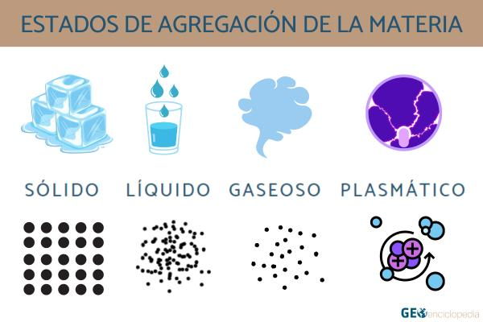

Estados de la materia
Los estados de la materia, son la forma que adopta un compuesto dependiendo de su agrupación atomica.
Los 4 estados de la materia son

Estado solido:
Los compuestos solidos pueden cambiar de estado por:
- Solido->Liquido=Fusion
- Solido->Gaseoso=Sublimación
Estado líquido:
Los compuestos liquidos pueden cambiar de estado por:
- Líquido->solido=Solidificación
- Líquido->Gaseoso=Evaporación
Estado gaseoso:
Los compuestos gaseosos pueden cambiar de estado por:
- Gaseoso->líquido=Condensación
- Gaseoso->solido=Sublimación inversa
- Gaseoso->plasmatico=Ionización
Estado plasmatico:
Los compuesto plasmaticos pueden cambiar de estado por:
- Plasmático->gaseoso=Desionización